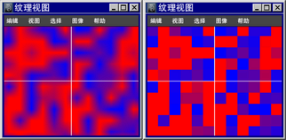

可以显示与 UV 编辑器中某一种纹理关联的图像。由于图像显示在 UV 后面，所以您可以重新排列与图像有关的 UV。
| 目标 | 操作 |
|---|---|
|
显示 UV 后面的纹理图像。 |
在“UV 编辑器”(UV Editor)中，单击工具栏上的“切换图像”(Toggle Image)按钮，或选择“图像 > 显示”(Image > Display)。 |
|
设定图像比率。 |
在“UV 编辑器”(UV Editor)中，单击工具栏上的“切换图像比”(Toggle Image Ratio)按钮，或选择“图像 > 图像比”(Image > Image Ratio)。 |
|
在融合像素和锐边像素之间切换。 |
在“UV 编辑器”(UV Editor)中，单击工具栏上的“切换已过滤的像素”(Toggle Filtered Pixels)按钮，或选择“图像 > 未过滤”(Image > Unfiltered)。 
|
|
在显示网格纹理和逐面纹理之间转换。 |
选择网格对象以显示网格纹理，或选择面以显示逐面纹理。 |
|
选择一种待显示的纹理（如果有多种纹理用于网格）。 |
在“UV 编辑器”(UV Editor)中，从“视图”(View)选项栏中的下拉菜单或从“纹理”(Textures)菜单中选择要处理的纹理。 处于组件选择模式下时，“纹理”(Textures)菜单将列出指定给选定组件的着色组。 处于对象选择模式下时，子菜单将列出指定给整个网格的所有着色组。 |
|
在 UV 坐标内裁剪图像。 |
在 UV 编辑器中，选择“图像 > 图像范围”(Image > Image Range) > |
如果纹理质量较差，或纹理有些部分未正确显示，则可以用材质节点“属性编辑器”(Attribute Editor)中的“硬件纹理”(Hardware Texturing)设置修改显示质量。
若正在使用文件纹理，则“纹理”(Texture)分辨率设置的最佳显示模式为“默认”(Default)。（其他设置，例如“高”，最适用于程序纹理）。
如果在纹理图像显示中遇到分辨率问题或裁剪问题，则使用“图像 > UV 编辑器烘焙”(Image > UV Editor Baking)烘焙纹理。更改纹理（文件节点和 place2dTexture 节点属性）后，必须重新烘焙该纹理（使用 UV 编辑器概述），才能看到这些更改的效果。